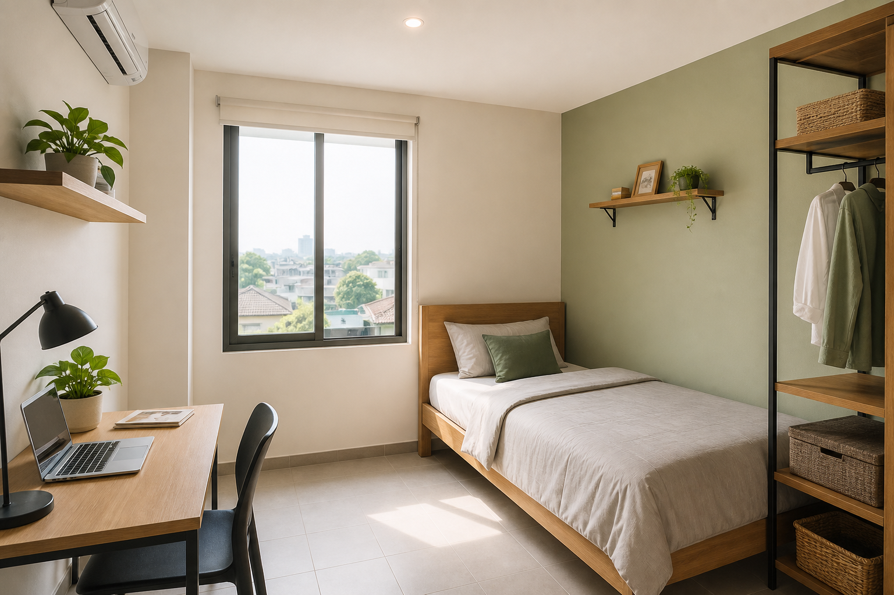
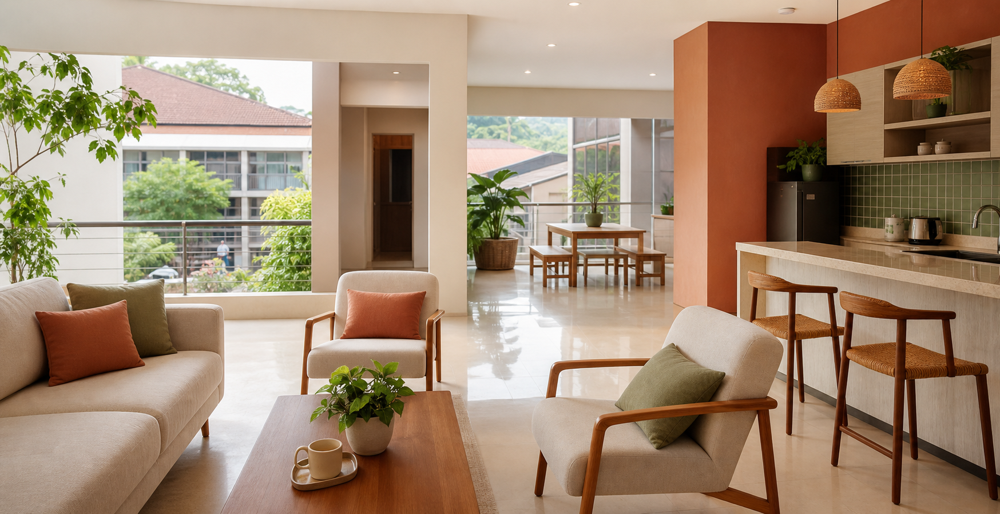

Kamar Standard
Ruang efisien dengan kasur, meja kerja, lemari, dan kamar mandi bersama yang bersih.
Rp1,2 jt / bulanTanya ketersediaan →Kos nyaman • aman • dekat ke mana-mana
Rumah Teduh hadir untuk mahasiswa dan pekerja muda yang ingin tinggal praktis, tenang, dan tetap punya ruang untuk beristirahat setelah hari yang panjang.

Pilihan kamar
Ruang efisien dengan kasur, meja kerja, lemari, dan kamar mandi bersama yang bersih.
Rp1,2 jt / bulanTanya ketersediaan →Kamar mandi dalam, jendela lebih lega, meja kerja, lemari, dan akses Wi-Fi di setiap lantai.
Rp1,6 jt / bulanTanya ketersediaan →Ruang lebih luas untuk yang membutuhkan area kerja dan penyimpanan lebih banyak.
Rp2,1 jt / bulanTanya ketersediaan →
Fasilitas bersama
Lokasi strategis
Hemat waktu perjalanan untuk kelas pagi atau meeting kerja.
Kebutuhan harian bisa dijangkau dengan jalan kaki.
Pilihan makan pagi sampai malam ada di sekitar Rumah Teduh.
Kamar tidak menunggu selamanya
Ini demo website kos-kosan buatan Infiraft. Struktur ini bisa dipakai untuk menampilkan unit, harga, fasilitas, lokasi, aturan tinggal, dan booking survey.
Booking survey via WhatsApp